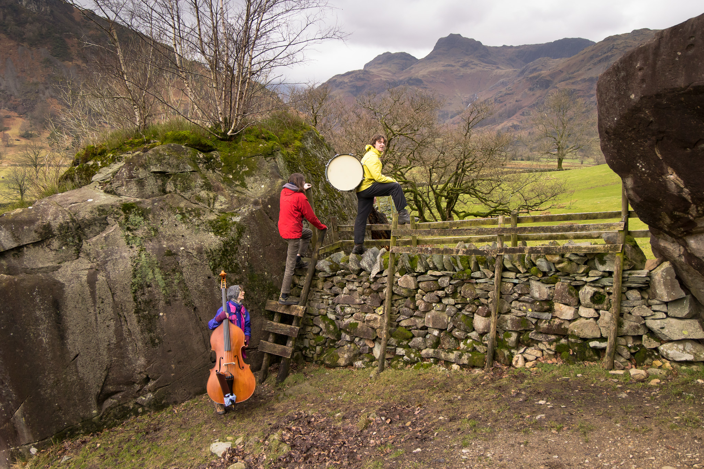

…Walking to a venue near you…
In spring 2026, EMRYS will embark on a ‘Walking and Music Tour’ of the Lake District.
Inspired by Poet Laureate Simon Armitage’s book ‘Walking Home’ and a quest to create music in resonance with our surrounding landscapes, we’ll travel across the mountains, valleys and waterways of the Lake District on foot, with each day's walk leading to a concert in churches, village halls, schools, and community spaces.
Recordings from each concert will form our debut album.
The tour is partly funded by the ‘Principals Award for Innovation’ received by Sam (EMRYS drummer), upon his graduation from Trinity Laban Conservatoire of Music and Dance in 2025. Read More Here
Anyone is welcome to join us on each day's walk.

Please note, there is no charge to come to the concerts. We’ll be taking donations towards the project at each venue. All are welcome.
Meeting points and times for the walks to be confirmed, please sign up to our mailing list for updates.
Please note that you are responsible for yourself and your equipment. By joining us on the walk you understand that you walk at your own risk and are expected to walk in a safe and considerate manner. Each walker is responsible for their own actions, and EMRYS carries no liability.
Remember to bring:
-Full waterproofs (whatever the weather!)
-Boots/sturdy shoes
-Mobile (fully charged)
-Something for lunch
-Snacks, water
Thursday 16th April
Walk: Troutbeck to Patterdale via High Street
Concert: Penrith Methodist Church, 7:30pm
Friday 17th April
Walk: Patterdale to Keswick via Helvellyn
Concert: Keswick St John’s Church, 7:30pm
Saturday 18th April
Walk: Keswick to Bassenthwaite Chapel via Skiddaw
Concert: Cockermouth United Reform Church, 7pm
Sunday 19th April
Walk: Keswick to Grasmere
Concert: Grasmere Village Hall, 6:30pm
Monday 20th April
Walk: Grasmere to Ambleside
Concert: Ambleside Parish Centre, 12.30pm
Tuesday 21st April
Walk: Ambleside to Coniston via Coniston Old Man
Concert: Swarthmoor Hall, Ulverston, 7pm
Wednesday 22nd April
Walk: Ulverston to Barrow-in-Furness via the coast
Concert: North West Music Academy, Barrow-in-Furness, 7pm
Thursday 23rd April
Walk: TBC to Kendal
Concert: Ghyllside Primary School, Kendal, 3:30pm


Photographs © Jumpy James